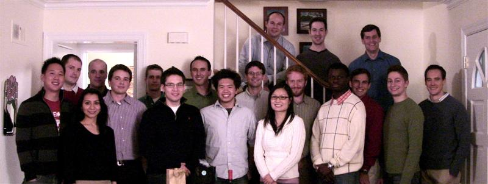
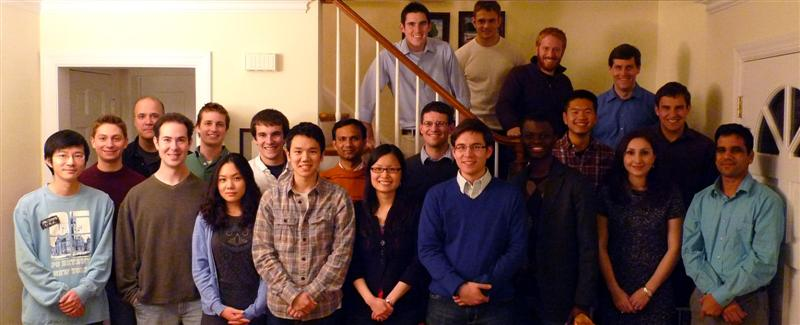
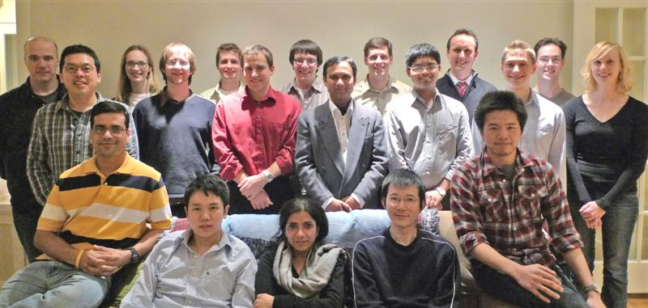

Alumni

Steve Akuamoah
(NSEC REU Summer 2003, Fall 2003, Winter 2004, Spring 2004)
Justice Alaboson
(Graduate Student, 9/07 – 8/12, Ph.D. MSE, 12/12)
Devang Amin
(Medical School Rotation, 2010)
Alexander Antaris
(Predoctoral Fellow, 7/09 – 8/11)
Dr. Michael Arnold
(Graduate Student, 9/01 – 12/06, Ph.D. MSE, 12/06)
Andrew Baluch
(NSEC MIN Summer 2002, NSEC Academic Year MIN 2002-2003, Honors Senior Project 2003, B.S. MSE 6/03, Graduate Student, 6/03 – 7/04, M.S. MSE, 12/04)
Lauryn Baranowski
(Graduate Student, 9/10 – 6/11)
Jon Barr
(Senior Project 2004, B.S. MSE, 6/04)
Dr. Rajiv Basu
(Graduate Student, 9/01 – 9/06, Ph.D. MSE, 12/06)
Daniel Becerra
(MRSEC REU Summer 2011)
Jesse Benck
(Honors Senior Project, 9/06 – 6/09, B.S. ChemE, 6/09)
Michael Born
(MBP Graduate Student, 9/10 – 6/12, M.S. Biotechnology, 6/12)
Ryan Brock
(BS/MS Student, 9/09 – 6/11, B.S./M.S. MSE, 6/11)
Meghan Campbell
(MRSEC REU Summer 2001, Work Study 2001, 2002)
Dr. Lixin Cao
(IEC Research Associate, 2002-2003)
Maryjoy Carnate
(NSF Career REU Summer 2001, 2002)
Christopher Chen
(Honors Senior Project, 2007-2009, B.S. MSE, 6/09)
Shih-Yao (Stan) Chou
(Honors Senior Project 2001, B.S. MSE, 6/01)
Dr. Steven Christensen
(Graduate Student, 9/03 – 12/08, Ph.D. MSE, 12/08)
Jenny Collins
(MRSEC REU Summer 2004)
Dr. David Comstock
(Graduate Student, 9/03 – 4/10, Ph.D. MSE, 6/10)
Jack Cosgrove
(BME Undergraduate Student, 9/04 – 4/06)
Samantha Cruz
(NSF Career REU Summer 2003, Ford Undergraduate Scholar Fall 2003, Winter 2004, Spring 2004, Honors Senior Project 2005-2006, B.S. MSE, 6/06)
Dr. Aparna Desphande
(Post Doctoral Fellow, 2010-2011)
Frank Du
(NSEC REU Summer 2006, NSF DMR REU Summer 2007, Honors Senior Project 2007, B. S. MSE, 12/07)
Leah Edelman
(Ford Undergraduate Scholar Fall 2002, Winter 2003, Spring 2003, Senior Project 2004-2005, B.S. MSE, 6/05)
Shaun Elder
(NSF Career REU Summer 2003, Laboratory Assistant Fall 2003, Spring 2004, and Winter 2005, Senior Project 2005-2006, B.S. MSE, 6/06)
Dr. Elizabeth
Fabbroni (Graduate Student, 9/00 – 2/03, Ph.D. MSE, 6/03)
James Fakonas
(Honors Senior Project, 2004-2008, Predoctoral Visiting Scholar, NanoIntegris, 2008-2009)
Stephen Filippone
(MRSEC Summer REU 2012)
Dr. Edward Foley
(Senior Research Associate, 2001-2012)
Scott Fong
(NSEC Summer REU 2010)
Dr. John Garramone
(Post Doctoral Fellow, 2011-2012)
Will Gathright
(B.S., Materials Science and Engineering, June, 2005)
Ryan Ginder
(B.S., Materials Science and Engineering, June, 2011)
Colton Gits
(Biomedical Engineering, Northwestern University)
Dr. Alexander Green
(Ph.D., Materials Science and Engineering, December, 2010)
Dr. Mark Greene
(Ph.D., Materials Science and Engineering, December, 2005)
Dr. Nathan Guisinger
(Ph.D., Materials Science and Engineering, December, 2005)
Cinthia Herrera
(B.S., Materials Science and Engineering, June, 2001)
Jane Herriman
(Chemistry, Carnegie Mellon University)
Christopher Horst
(Materials Science and Engineering, Northwestern University)
Dr. Zakir Hossain
(Post Doctoral Fellow)
Judy Huang
(B.S., Integrated Sciences Program, June, 2003)
Yan Huang
(Biomedical Engineering, Northwestern University)
Dr. Sung Huh
(Post Doctoral Fellow)
Dr. John Ireland
(Post Doctoral Fellow, 2004-2008)
Wang Ji
(National University of Singapore)
John Joo
(B.S., Materials Science and Engineering, June, 2005)
Cameron J. Kadleck
(Materials Science and Engineering, Northwestern University)
Dr. Joshua Kellar
(Ph.D., Materials Science and Engineering, December, 2009; Post Doctoral Fellow, 2010)
Jacob Kelter
(Materials Science and Engineering, Northwestern University)
Dr. C. Reagan Kinser
(Ph.D., Materials Science and Engineering, December, 2005)
Dr. Donald Kramer
(Smith & Nephew)
Alexandra Ladik
(Emory University)
Jae-Hyeok Lee
(Ajou University)
Joe Lee
(M.S., Materials Science and Engineering, June, 2008)
Dr. Benjamin Leever
(Ph.D., Materials Science and Engineering, December, 2011)
Sai-Pong Leung
(Materials Science and Engineering, Northwestern University)
Shengyao Li
(Materials Science and Engineering, Northwestern University)
Christopher Liman
(B.S., Materials Science and Engineering, June 2009)
Josue Lopez
(Physics, Rice University, MRSEC Summer REU, 2010 and 2011)
Nicole Mahan
(Materials Science and Engineering, Northwestern University)
Dr. Alexander Manasson
(NanoIntegris)
Dr. Adam McFarland
(Department of Chemistry, University of Minnesota)
Molly Melhem
(Electrical Engineering, Cornell University)
Dr. Paolo Messina
(Argonne National Laboratory)
Dr. Youjin Na
(Post Doctoral Fellow, 2010-2011)
Dr. Gordana Ostojic
(Post Doctoral Fellow, 2005-2010)
Joohee Park
(B.S., Materials Science and Engineering, June, 2010)
Dr. Liam Pingree
(Ph.D., Materials Science and Engineering, December, 2006)
Wasut (Khun) Pornpatcharapong
(Materials Science and Engineering, Northwestern University)
Kyle Ritter
(Chemistry, University of Southern Indiana)
Neil Schmidgall
(Glenbrook South High School)
Matthew Schmitz
(M.S., Materials Science and Engineering, December, 2007)
Dr. Norma Sosa
(Ph.D., Materials Science and Engineering, December, 2012)
Samuel Spencer
(Chemical Engineering, Northwestern University)
Matthew Such
(M.S., Materials Science and Engineering, December, 2002)
Jin Suntivich
(B.S., Materials Science and Engineering, June, 2006)
Jenny Thomson
(Chemistry, Kalamazoo College)
Dr. J. D. Tovar
(Department of Chemistry, Johns Hopkins University)
Dr. Timothy P. Tyler
(Ph.D., Materials Science and Engineering, June, 2012)
Christian Valley
(Materials Science and Engineering, Northwestern University)
Auste Vygantas
(Oakton Community College)
Dr. Michael Walsh
(Ph.D., Materials Science and Engineering, December, 2009; Post Doctoral Fellow, 2010)
Dr. Qing Hua Wang
(Ph.D., Materials Science and Engineering, December, 2010)
Zhiyang (Alec) Wei
(B.S., Electrical & Computer Engineering, June, 2006)
Kristen Weiss
(Chemistry, Central Methodist College)
Miguel Wong
(Chemistry, University of Michigan)
Jamie Wright
(Mechanical Engineering, Northwestern University)
Dr. Nathan Yoder
(Ph.D., Materials Science and Engineering, December, 2007)